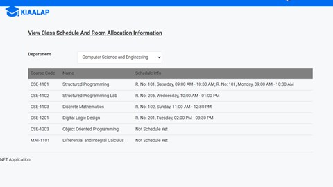
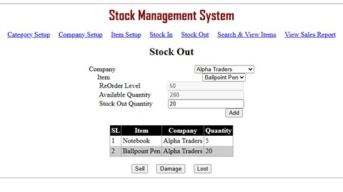

About
I'm a lead software engineer at SoftifyBD, where since 2022 I have worked on ISPDigital, a multi-tenant SaaS that runs billing, online payments and network automation for internet service providers. Every provider gets its own database, and the largest serve more than 30,000 subscribers.
Most of my work sits close to the database: ledgers that keep balances right under concurrent updates, money that moves through a three-level reseller hierarchy, and schema changes rolled out to every tenant database without losing data.
Those schema changes led to my research question: when a database changes, can AI tools fix the SQL written for the old version? I'm applying for a thesis-based MSc for Fall 2027 to study database evolution and the reliability of LLM-generated SQL.
My research interests
- Database schema evolution and data migration
- Text-to-SQL and the reliability of LLM-generated SQL
- Data consistency in database-backed systems
- Technical debt
Get in touch
Professional Experience
-
Oct 2025 — Present
Lead Software Engineer · SoftifyBDCurrent
ISPDigital: a multi-tenant SaaS for internet service providers, with one database per tenant.
- Designed a ledger-based balance system that keeps reseller balances consistent under concurrent updates.
- Built the money flow for a three-level sub-reseller hierarchy: each level pays its own cost when it funds the level below, each parent–child pair keeps its own owed account, and online payments are split along the chain without paying any level twice.
- Found and fixed race conditions and transaction-boundary bugs in money-movement code.
- Redesigned database schemas and migrated live data across every tenant database.
- Integrated a new payment gateway (ShurjoPay), added support for several credentials per gateway (bKash, Nagad, SSLCommerz and others), and fixed webhook and redirect failures in live payment flows.
- Reworked background processing: scheduled jobs on a dedicated Hangfire server kept alive by a second one, router and SMS calls moved into retry-backed jobs, and messaging to an accounting microservice.
-
Jun 2022 — Sep 2025
Software Engineer · SoftifyBD
The same product on its earlier ASP.NET MVC 5 platform, plus the APIs behind its mobile apps.
- Built billing and wallet features for a reseller network: prepaid and postpaid fund credit, automatic renewals, daily bill collection and balance recalculation.
- Built the REST APIs behind the company's mobile apps for administrators, resellers and their customers: dashboards, bill collection, transactions and support tickets.
- Integrated online payments for resellers and their customers on web and mobile, including tokenized payments, webhook and PayBill notifications, processing fees and country-wise currencies.
- Improved performance on large tenants: partitioned the customer transaction tables, rewrote slow screens with Dapper, and removed repeated database calls.
- Automated recurring jobs (renewals, status schedules, router sync), and posted bills and sales invoices to the accounting system.
-
Jun 2022 — Jul 2022
B.Biography · Personal training project
A site where people publish a CV-style biography and visitors browse them by category, with admin pages that each role may or may not open. In 2026 I fixed its security and data bugs: role checks on every admin page, salted PBKDF2 password hashes, safe photo uploads, one transaction per biography, and a sign-up check that holds under concurrent requests.
-
2019 — 2020
Teaching Assistant · International Islamic University Chittagong
Department of Computer Science and Engineering
- Evaluated lab assignments and practical reports for correctness, logic and efficiency, explained mistakes, and helped conduct practical tests under the instructor's supervision.
- Ran lab sessions: prepared the lab machines and materials, demonstrated the exercises, and helped students debug their programs and fix setup problems.
Education
-
2016 — 2021
B.Sc. in Computer Science and Engineering · International Islamic University Chittagong
3.898CGPA out of 4.002ndIn a class of 42
Ongoing Research
-
2026 — Present
SchemaShift: can open LLMs fix an existing SQL query after the schema changes?
Independent research projectPilot results
Databases change: columns are renamed, tables split, a "deleted" flag added. A query written for the old schema then fails, or keeps running and silently returns wrong rows. I built 144 repair tasks from the BIRD Mini-Dev benchmark under four kinds of schema change, with gold answers computed automatically, and tested 9 open models (1.5B–16B parameters), each with and without a one-line hint.
144Repair tasks9Open models4Schema changes18Silent wrong answersModel Renamed Meaningless Qwen2.5-Coder 14B 100% 79% Phi-4 14B 97% 67% Qwen2.5-Coder 7B 95% 21% DeepSeek-Coder-V2 16B 92% 10% Share of queries fixed when the same six columns get natural names (
first_name→given_name) or meaningless ones (Attribute1), without a hint.- Silent errors go unnoticed. Without a hint, no model fixed more than 4 of the 18 soft-delete tasks where the old query still runs but returns wrong rows.
- Hints help general models, not SQL-specialised ones. Gemma 3 12B went from 0 to 15 of the 18; OmniSQL 7B stayed at 0.
Academic Thesis and Projects
-
2020 — 2021
Fake News Identification of Bangla Online News Portal Using Deep Learning Approaches
B.Sc. thesis with Sadia Alam · Supervisor: Dr. Engr. Abdul Kader Muhammad Masum
Very little fake-news research existed for Bangla, so we built our own corpus by collecting articles by hand from Bangla news portals and satire sites, trained Word2Vec on our own Bangla vocabulary, and compared three deep learning classifiers. LSTM did best: 92% accuracy on a held-out 20% split and 91% in 5-fold cross-validation. The corpus is imbalanced (8,184 real, 1,851 fake), which the thesis names as its main limitation.
10,035News articles134KVocabulary words3Models compared -

University Course Management System
2019 academic project
Courses, teachers, rooms and results. In 2026 I reproduced its concurrency bugs (double-booked rooms, duplicate registration numbers) and fixed them with transactions and row locks.
-

Stock Management System
2018 academic project
Stock in, stock out and sales reports. In 2026 I fixed an oversell race that let stock go negative, by making stock-out one transaction with a conditional decrement, and checked it with browser tests.
Certifications
-
SQL (Basic)
Skills
- Languages
- Backend
- Frontend
- Data
- Messaging & jobs
- Machine learning & NLP
- Research tools
- Integrations
- Tools & testing
Contact
I am glad to talk about research, databases and software engineering. Email is the quickest way to reach me.
- Emailt.haideronu96@gmail.com
- LinkedInlinkedin.com/in/tamanna-haider-dev0622
- GitHubgithub.com/tamannaHaiderAnanna
- LocationDhaka, Bangladesh